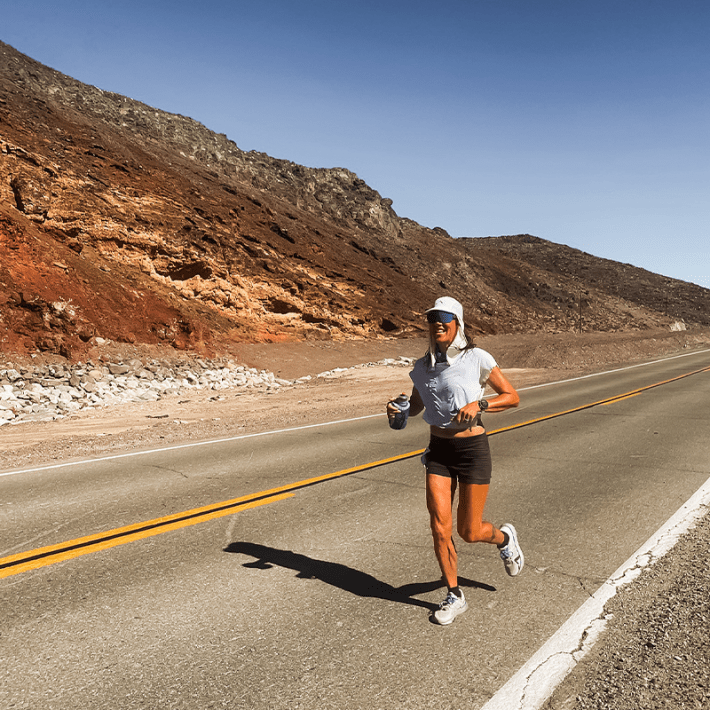

Each summer, runners line up to race 135 miles across Death Valley in California. They run from the lowest point in the country—the salt flats of Badwater, 282 feet below sea level—to finish with a climb up to 8,300 feet at the base of Mount Whitney. They start at night to minimize time spent running in the heat of the day. Although even after the sun goes down, it’s still scorching hot. This year, when ultrarunner Megan Eckert, 39, started the race, the air temperature was 114 degrees Fahrenheit. And it didn’t dip much as she ran through the night. The blacktop asphalt road that is the long, punishing course enveloped her in heat from the day’s harsh sun.
The race, known as the Badwater 135 Ultramarathon, includes about 100 runners and takes place in the crushing heat of July. Each participant has to be an experienced ultrarunner to be allowed to put their bodies through “the world’s toughest race.”
The human body is capable of surprising things. But as someone who comes from a family of distance runners, I have long wondered, how does a person prepare—physically and mentally—for this kind of infernal challenge? How do they manage the heat, for so long? And with the growing frequency of heat waves around the globe, I wanted to know what a finisher of this race might have to teach us about coping in extreme heat.
To answer these questions, I caught up with Eckert, who ran Badwater for the first time this July, finishing second for women with a time of 26 hours and 24 minutes.

INTO THE HEAT: Ultrarunner Megan Eckert ran 135 miles across Death Valley this July in the notorious Badwater Ultramarathon. We asked her to share her recommendations about how to stay cool when temperatures get extreme. Photo courtesy of Megan Eckert.
How do you think about being in this sort of extreme heat—especially for so long—and how it stresses the body?
There’s definitely preparation that goes into it, because I think if you weren’t prepared for the heat, your body would shut you down. The body does react differently—the climate is so harsh.
How did you prepare for running Badwater?
I did a lot of afternoon runs, starting in the spring, so that when the temperatures started to heat up it wasn’t a complete shock. I started running in the afternoons when we were having 70-degree afternoons, then 80-degree ones, and built up time and tolerance to the heat. But we didn’t actually have a lot of hot days above 90 where I live, in Santa Fe, this year in preparation for the race, which was disappointing for training!
About six weeks before the race, I started going to the sauna after my run. I would go straight there and started by spending about 15 minutes in there. Eventually I built up to 40 minutes and would alternate between a steam sauna and a dry sauna, to get both effects.
How else did you get ready to run 135 miles through Death Valley in July?
About a week before, I did a navigational race up at high-altitude, at about 11,000 feet in Silverton, Colorado. Then I slowly drove from Silverton out to Nevada. I made little stops along the way, in Arizona and Utah, to just adjust to the heat, and I had no AC going in my Jeep. I went to a hot spring for more heat training. And I tried to spend as much time outside as I could. I ran in Sedona, Arizona, I ran in Page, Arizona. It wasn’t anything too stressful training-wise. I tried to just be out as much and as long as I could, even if it was just walking through a town.
If you weren’t prepared for the heat, your body would shut you down.
What sorts of measures did you take during the race—not only to stay safe, but also to run at such a strong and fast pace—in terms of physiology, nutrition, and, of course, hydration?
My husband is my crew chief, and I had three good friends who were also part of our crew. I was extremely lucky having the crew that I did, and the fact that they were able to troubleshoot things so well. My husband knows me extremely well, so he can tell when I’m overheating, or if things are going wrong what we need to do. So he’ll say, “Here’s a bandana I soaked in ice water, you can put it around your neck.” That saves time because you can spend more focus on just running and keeping that momentum.
I started with the idea that I was going to do liquid nutrition, so I had a carbohydrate and hydration (electrolyte) mix I used for the first 22 miles. Then my stomach was like, No, we’re not doing this! I kept having to stop every two miles, and it was breaking my rhythm. So the crew was really good at seeing: This wasn’t working, what else do we have? We ended up going to more of a solid food combo, of potato chips and gummies, and pasta! We did pasta with bacon and parmesan cheese for the salt, and after about 22 more miles, things started to settle down. So that was how I fueled the remaining 90 miles. I did try to get some protein in because once you hit about 16, 17 hours, it’s important to have some sort of protein, especially a race where you’re climbing, to prevent muscular breakdown.
You come into a race like Badwater, where it’s so extreme, and you have a plan. But because of the extreme conditions, your plan doesn’t always work, so you have to be prepared to pivot as needed.
You mentioned the cold bandanas—are there other things you did to keep your body temperature at an okay level?
There were portions where the sun was really beating down, so I conserved effort during those parts and maybe didn’t push as hard as I could have. But it was one of those balancing acts where it was actually smarter to go a little bit slower. So there was a lot of conservation of energy and just not overheating because it’ll pay off later in the race. Like the climb out of Panamint Springs—the first three miles were really hot. But I knew I really needed to be smart there because I was only 72 miles in, and there’s still a lot of race to go.
Were there other things that were important for managing the heat and exposure?
I think a lot about the sun. There’s a mental side and then there’s a physical side to being in the sun. We all had hats that have the gator attached in the back, flaps to keep the sun off the back of our necks—and I say “we” because my crew had them also. They were light and helpful just to not have the sun beating on the back of your neck. We also kept sunblock on the whole time. I wasn’t willing to wear knee-high socks because of the heat, so we just kept spraying down with sun block.
The smartest thing, when we’re talking about heat, is to get the body used to it as much as possible.
What was the hardest part of the race for you?
There’s a point where you hit Darwin, and it’s a long, very gradual downhill road all the way into Lone Pine. You can see Lone Pine from about 22 miles out. And you’re so far out it’s like you’re running in place because it never seems to get any closer. And you can see Mount Whitney, you can basically see the remainder of the course, and you’re still only maybe at mile 90 at that point. So it’s mentally challenging at that point—and physically challenging, too, because you have already done two climbs, and you’re just not moving forward. And it was later in the afternoon, so you’re running into the sunset. So my crew started stopping every mile to make sure we had ice bandanas, make sure I was staying cool, make sure I was eating and drinking.
*What did you take away from training for this race that you’ll use in the future?*
It’s really, really, really hard, with a race like Badwater, to recreate those same sorts of conditions for training. I’ll definitely be using, for other hot races, the same heat-training regimen. I mean, it was hot—don’t get me wrong, it was hot!—but I feel like I was prepared as best I could be for the type of condition I would be running in.
Are there things from your training and experience at Badwater that could be translatable to, say, us mere mortals living in hotter conditions, who are just looking to get by?
The smartest thing, when we’re talking about heat, is to get the body used to it as much as possible. If you know you have something coming up and you’re going to be in the heat—whether it be a bike race or a run or boating or just being out in the heat of the summer—is to start with the season as the season warms up, rather than trying to do it all at once. Like, if your event is at the end of July and you jump in in June, well it’s already 90 degrees out. If you had started in April, you could have adjusted with the season as it warms, and it’s less stress on the body that way. That’s probably the most beneficial thing, is to ease into it, with the changing seasons.
And I do the same, honestly, on the flip side, for winter. If you know you’re going to be out in winter and out in the cold, well, when it starts to get cooler, spend time out there. So you’re not just trying to adjust to 20-degree temperatures instantly, because that’s a lot more stress on the body.
Have you always been a distance runner?
No, I didn’t start running until I was 29. I had just met my now-husband, and we trained for a half-marathon together, and it just kind of continued! I’m from Houston, and I tend to do well in the heat. My first 100-mile race was actually in Houston, so it was humid and in 100-plus degrees.
Would you run Badwater again?
Maybe not next year. But I would definitely do it again.
One thing I like about being out in Badwater basin is that you’re the only people out there. The conditions are tough, and there are lots of things going on with your crew and the race. But there’s this point in the beginning of the race [at night] where all of a sudden you were kind of separate from all the cars, and the race field started to spread out, and all the light started to dissipate a little bit. And you looked up, and you could just see all of the stars, and you could see the Milky Way. And there’s nothing more amazing than just feeling that small in this huge place. I feel like those moments in racing sometimes are missed, but those little experiences are some of the coolest parts of racing. 
Lead image: Amanda Sala / Shutterstock